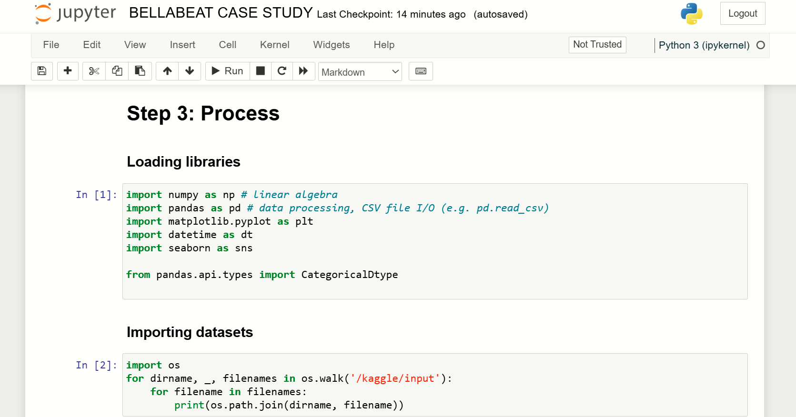
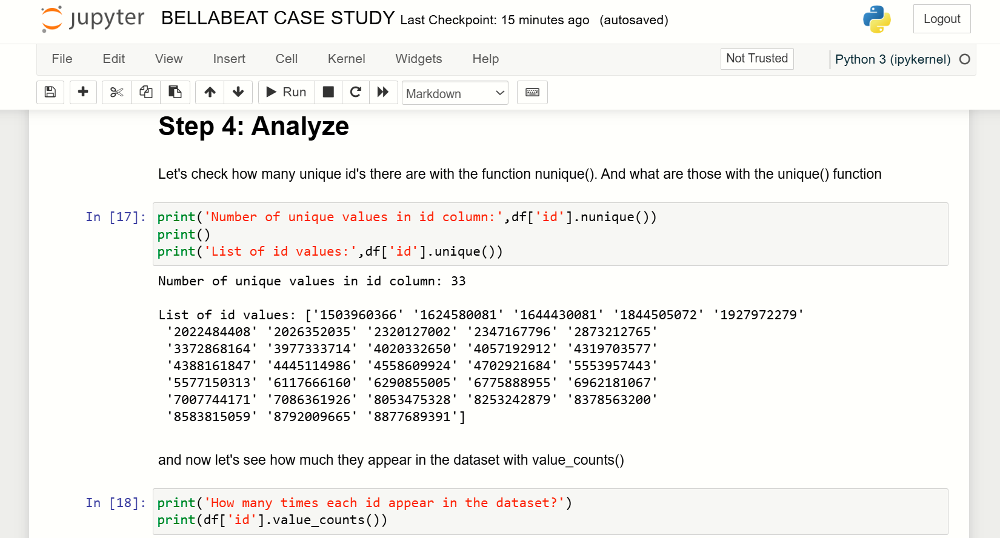
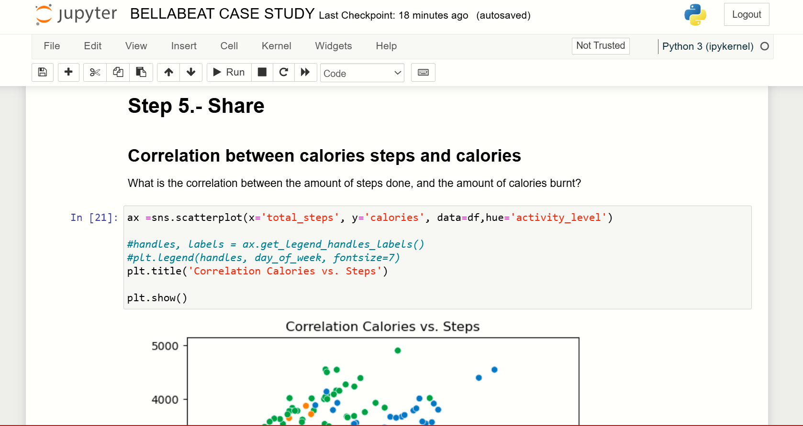
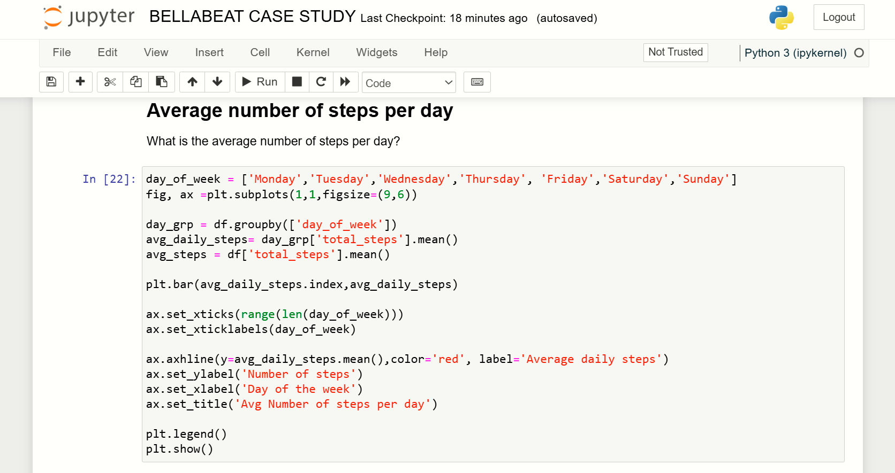
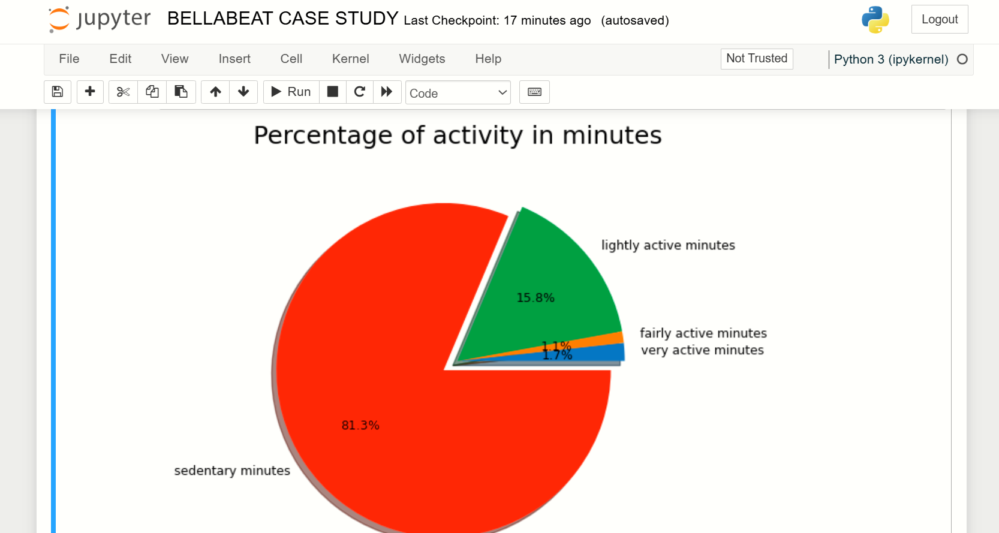

The primary goal of this project was to analyze Fitbit activity data to uncover trends, patterns, and correlations between physical activity and calories burned. Specifically, the project aimed to explore users' activity levels across different days of the week, investigate correlations between activity metrics (e.g., steps, minutes of activity) and calories burned, and visualize user behaviors through various plots to gain insights into overall activity patterns.
Pandas: For data manipulation, grouping, and cleaning.
Matplotlib & Seaborn: For creating various visualizations such as scatter plots, bar charts, and pie charts.
NumPy: For handling numerical operations and statistical calculations.
Jupyter Notebook: For developing, documenting, and presenting the analysis in an organized manner.
Data Visualization: Matplotlib and Seaborn libraries for advanced plotting and visual representation of trends.
Data Cleaning and Preparation:
Filtered, cleaned, and preprocessed Fitbit activity data to ensure it was ready for analysis.
Ensured consistency in time format for activity tracking and identified unique users through id and activity_date.
Exploratory Data Analysis (EDA):
User Activity Distribution: Analyzed the number of unique users and their respective activity counts.
Correlation Analysis: Explored the relationship between steps taken and calories burned using scatter plots.
Daily Activity Patterns: Investigated the average steps taken on each day of the week to determine trends in user activity.
Time Spent in Activity Levels: Created a pie chart to represent the proportion of time users spent in different activity levels (e.g., sedentary, lightly active, etc.).
Calorie Burn Analysis: Evaluated the correlation between calories burned and different types of activity minutes (sedentary, lightly, fairly, and very active).
Visualization:
Created multiple plots (scatter plots, bar charts, pie charts) to visually convey relationships and activity trends.
Used color to highlight differences in activity levels and time spent at each intensity.
Positive Correlation Between Steps and Calories: The analysis showed a clear positive correlation between the number of steps users took and the number of calories they burned, demonstrating that higher activity levels are directly related to greater calorie expenditure. Activity Patterns by Day: Users were most active on Mondays, Tuesdays, and Saturdays, while Sundays showed the least activity. This insight could inform fitness planners or app designers to encourage more weekend activity or adjust their content for off-days. Sedentary Behavior Dominates: The pie chart revealed that users spent a majority of their time in a sedentary state, with only about 2% of the time spent on high-intensity activity. This finding could inform fitness platforms to create targeted interventions that encourage more active behavior. Data-Driven Health Recommendations: Based on the insights gathered, recommendations for increasing daily activity can be made to Fitbit users, such as targeting users to be more active on Wednesdays through Sundays, when activity tends to decline. These insights can help stakeholders, such as fitness trainers, app developers, or health data analysts, create targeted strategies to boost user engagement and improve overall health and fitness outcomes.